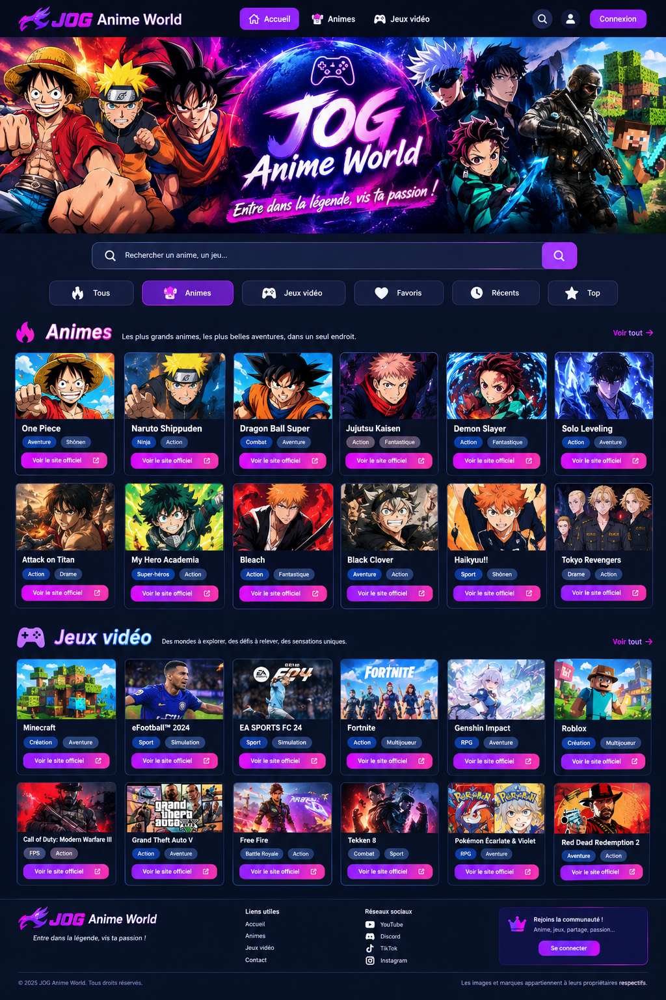

🔥 Univers des animes
Retrouve les séries, leurs descriptions et leurs sites officiels.
Entre dans la légende, vis ta passion !

L'aperçu de la nouvelle bannière est temporaire. Pour la publier pour tous, il faut héberger l'image et enregistrer son adresse dans la configuration du site.
Explore tes animes préférés et découvre de nouveaux jeux.
Retrouve les séries, leurs descriptions et leurs sites officiels.
Découvre les jeux et visite les sites de leurs éditeurs.
L'espace d'administration définitif doit être relié à une authentification sécurisée et à la base de données. Ce formulaire ne constitue pas, à lui seul, une protection permettant de gérer le site en toute sécurité.
Pour permettre à l'administrateur d'ajouter, de modifier et de supprimer les contenus sans donner ces droits aux visiteurs, il faut configurer Supabase Auth, les autorisations de la base de données et les règles RLS.
Les fonctions de gestion seront activées après cette configuration. N'inscris pas de mot de passe personnel dans ce fichier HTML.